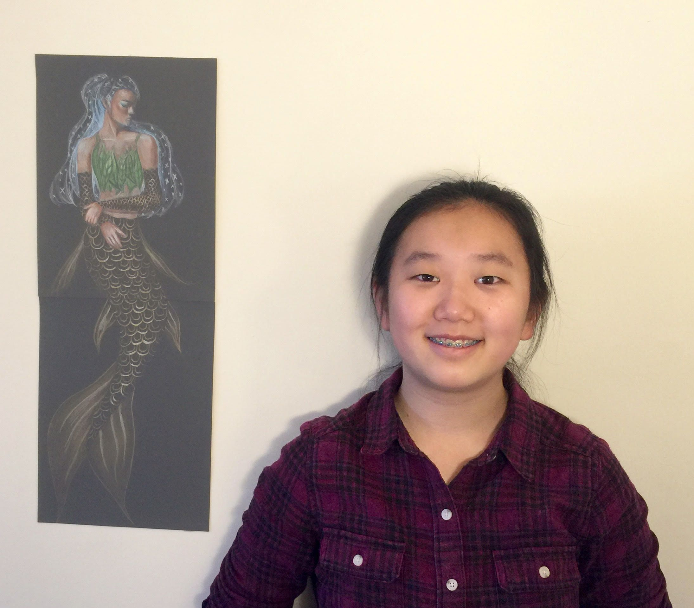
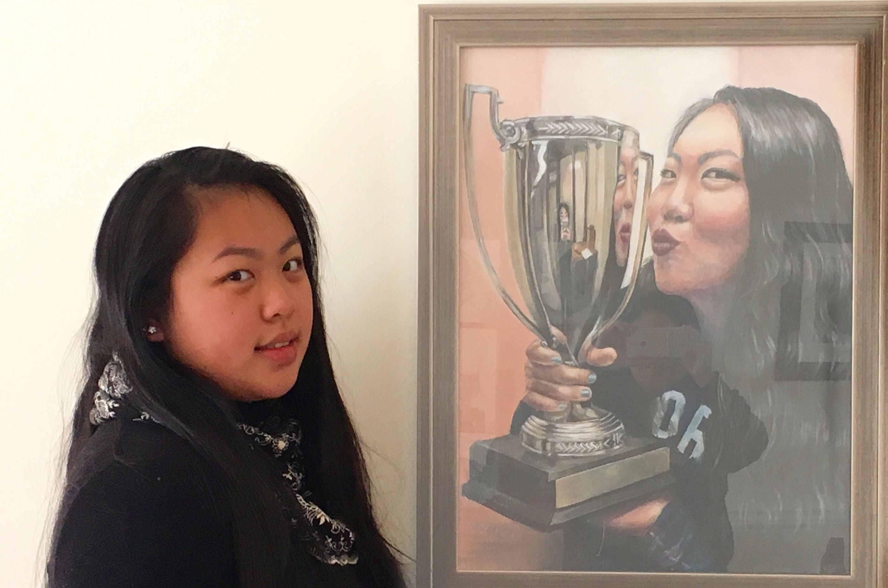

莎伦纽约及海外学生荣获北美洲艺术庆典大奖
2015年秋冬版北美洲Celebrating Art画册评出多项奖。莎伦画院有173位学生的作品被入选出版。其中Sharron 老师有36位学生入选、Jeffrey32位、 Danielle 32位、Irene 28位、Angela 23位、纽约莎伦分校13位、上海莎伦分部2人、Shiza 5位、Yixuan 2位。
莎伦画院学生参赛只有两年半，但在长期统计中，北美洲得奖分数最高的第三名学校（Art Top Schools）是新泽西州的莎伦画院；本季北美洲得奖最多的学校统计，第一名依然是新泽西莎伦画院；本季又评出5％中奖率的High Merit，43位莎伦学生获得High Merit；本季有3位莎伦学生作品荣获Top 10荣誉。

获得Top 10的莎伦学生是Bowen H Liu（刘博文）、Grace Lin Wang（王琳）、Cathy Jin（金英慧）。
8岁的刘博文去年也获得北美洲Celebrating Art画册夏季版的出版及High Merit奖。好动的博文喜欢足球、滑雪，绘画的学习能训练他安静与专注力，经过莎伦画院Irene老师的指导，学会了做什麽事应该达到什麽程度才叫做完成，小小年纪已经在不知不觉中提升了自我高要求的能力，同时在创作和色彩世界中＂玩＂得很开心。

12岁的王琳几年前跟随好朋友来莎伦画院学习，同行的小朋友没有坚持下来，而王琳越学越有劲，在老师帮助下，每一个困难的跃过都是学画的提升。莎伦孩子们就是在困难与突破当中，体验自己的潜能，建立自信心。王琳喜欢阅读、舞蹈⋯而绘画帮忙她把一切美好的事物，都归纳在画面的述事与表达当中。
16岁的金英慧既使大学不主修美术，也在繁重的高中课程之馀，挤时间专注学画，绘画是一种精神上的调节与休息。持续一项自己喜欢的爱好，同时可以在申请大学时递上一项优秀特长做为加分。英慧曾获今年Scholastic艺术大奖、 2015 celebrating夏季版high merit、圣诞爱心贺卡设计比赛第三名、美国中文电视举办的第二届全美青少年才艺大赛绘画第二名(现场限时三小时画完)⋯
秋冬版有几位获得5％中奖率的High Merit的莎伦学生，来自中国大陆和美国多个州。密西根州的Yifan You、宾州的Isabella Lin、纽约曼哈顿的XiXi Wang、＂上海莎伦＂的扬雪莹⋯（2016）